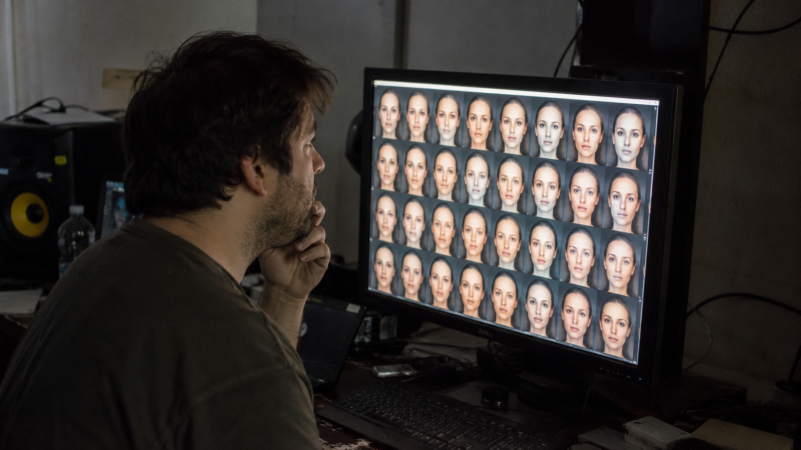

← BACK TO DOSSIERS LIST
CALIBRATION CASE FILE // TREND: WHY DOES ALL AI ART LOOK EXACTLY THE SAME?
Forensic Realism Calibration: Examining Synthetic Face Grids Through Documentary Observation
DATE: 2026-06-26
STATUS: EVIDENCE_DETECTION
ENGINE: CHATGPT DALL-E 3

SPECIMEN IMAGE #16:9 - CLEAN OPTICS
Artificial face generation systems often appear convincing when evaluated individually, yet forensic observation changes when many outputs are displayed simultaneously. When we look at a grid of nearly identical synthetic faces on a monitor inside a dim studio environment, our brain instantly registers a pattern of repetition that breaks the illusion of reality. To bypass this default AI signature, we need to understand how the layers of physical observation interact, moving away from idealized renderings toward documentary authenticity.
To truly solve this issue, we must audit our generations through a five-layer forensic model that dissects subject posture, ambient environment, and camera limitations. Below, we map out the exact layers and lexicon shifts applied to this specimen. However, simply identifying these layers is not enough; the real breakthrough lies in how we bridge the camera physics with our final command console at the bottom of this dossier, which reveals the language shift required to force the AI to simulate a real physical capture.
Looking closely at the specimen, the Physics and Time layers provide crucial calibration signals. Light emitted by the display interacts with skin, clothing, and nearby surfaces in ways that expose realism limits. Minor reflections, dust, aging equipment, and signs of repeated use contribute information that is frequently absent from overly optimized synthetic imagery. By replacing dead, generic adjectives with these physical observations, we align the generated imagery with documentary expectations. For a deeper analysis of these physical-image behaviors, visit the ALPHA REALISM platform.
Finally, the Camera layer completes the forensic model by simulating sensor noise, focus inconsistency, and highlight clipping. These characteristics are evidence of a physical capture process rather than digital perfection. Shifting your prompt lexicon to mimic these camera-grade limitations is the ultimate key to bypassing the waxy AI sheen. For the complete master catalog of camera presets, dynamic lens profiles, and prompt command structures, explore the ALPHA REALISM Guide to elevate your pipeline today.
The 5 Layers of Reality Applied
Subject:
An adult individual stands or sits close to a computer monitor, carefully studying a matrix of visually similar artificial human faces. The person shows natural posture imbalance, slight neck tension from prolonged screen attention, ordinary clothing with realistic fabric folds, subtle facial asymmetry, uneven eye focus adaptation to screen brightness, and non-performative body language. No beautification, no stylized expression, and no idealized appearance.
Environment:
A dimly lit studio with practical monitor illumination acting as the dominant light source. Uneven shadow distribution appears across furniture, cables, desk surfaces, and equipment. Background elements remain partially visible with realistic clutter, imperfect organization, localized darkness, mixed color temperatures, and natural luminance falloff away from the monitor.
Physics:
Monitor light reflects unevenly across skin, clothing fibers, desk materials, and nearby objects. Minor specular highlights appear on the screen surface. Gravity affects posture, clothing drape, and cable placement. Ambient dust particles, screen glare, subtle reflections, and localized shadow contamination contribute to physical plausibility.
Time:
Signs of extended workspace use include light dust accumulation on surfaces, faint wear on desk edges, fingerprints on the monitor bezel, slight fabric fatigue in clothing folds, mild eye strain behavior, and subtle environmental aging consistent with a regularly occupied creative workspace.
Camera:
Documentary-style digital capture using a practical full-frame or APS-C camera equivalent with a 50mm lens perspective. Slight sensor noise in darker regions, imperfect focus priority, mild edge softness, realistic dynamic range limitations, natural highlight clipping from bright screen elements, subtle compression artifacts, and authentic low-light image behavior.
The Lexicon Shift Table
| Appearance (Dead Adjective) |
|
Living Event (Cause & Effect) |
| perfect skin |
➔ |
skin texture showing subtle pores, uneven reflectivity, and localized tonal variation under monitor light |
| cinematic lighting |
➔ |
practical monitor illumination mixed with dim ambient studio lighting |
| flawless composition |
➔ |
observational framing with slight imbalance and natural workspace clutter |
| hyper detailed face |
➔ |
screen-viewed facial patterns with realistic display limitations and pixel structure |
| clean modern studio |
➔ |
actively used workspace with cables, equipment, dust, and uneven organization |
| ultra sharp image |
➔ |
realistic focus behavior with localized softness and low-light limitations |
| perfect symmetry |
➔ |
repeating artificial faces displaying subtle rendering inconsistencies and pattern repetition |
| masterpiece portrait |
➔ |
documentary observation of a person analyzing synthetic visual outputs |
Calibration Prompt Console
SUBJECT LAYER: documentary photograph of an adult person closely examining a grid of nearly identical artificial faces displayed on a computer monitor, natural posture imbalance, slight neck tension, ordinary clothing with realistic wrinkle behavior, subtle facial asymmetry, authentic concentration, non-performative expression, identity preserved, no beautification. ENVIRONMENT LAYER: dimly lit studio workspace, practical monitor light as primary illumination, scattered cables, desk equipment, realistic clutter accumulation, mixed color temperatures, partial background visibility, uneven shadow distribution, observational realism. PHYSICS LAYER: monitor reflections on skin and clothing, subtle screen glare, realistic specular highlights, gravity-driven fabric draping, ambient dust presence, physically plausible light falloff, natural reflection behavior. TIME LAYER: workspace wear, fingerprints on monitor frame, dust accumulation, material aging, fabric fatigue, signs of prolonged computer use, believable environmental history. CAMERA LAYER: documentary digital photography, 50mm equivalent perspective, low-light sensor grain, slight chroma noise in shadows, imperfect focus acquisition, realistic dynamic range limits, subtle highlight clipping from the display, mild compression artifacts, non-cinematic optics, authentic observational capture, realism through physical limitations --ar 16:9
Do you want to generate precise AI images?
Unlock our alpha realism blueprint, physical reliable framework to get the best of your creations with the ALPHA REALISM Guide.
Download Ebook Now